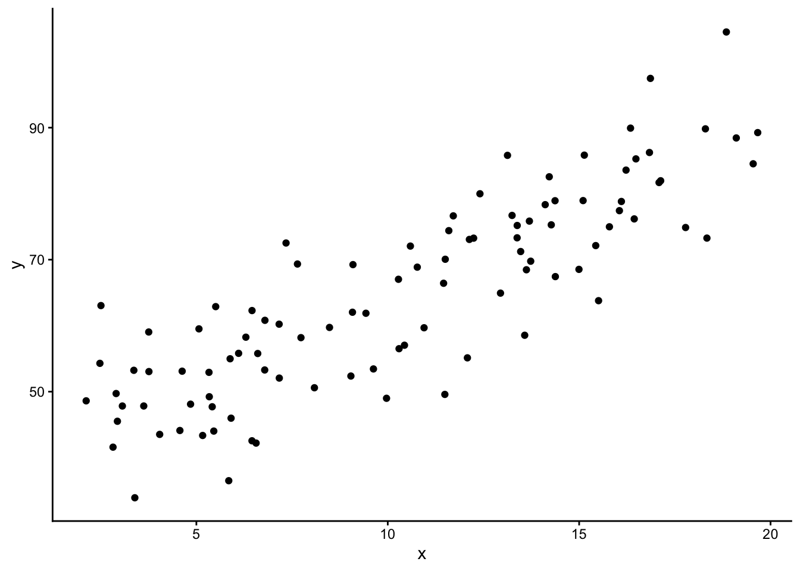
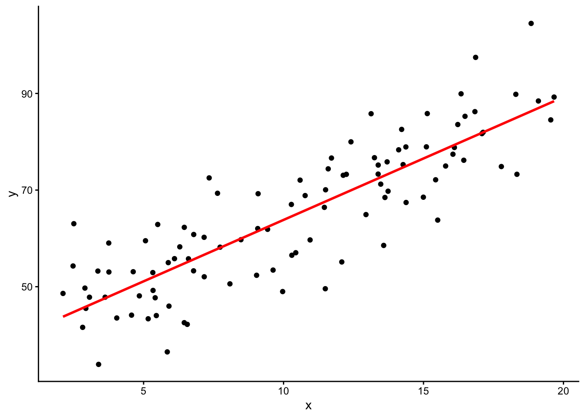
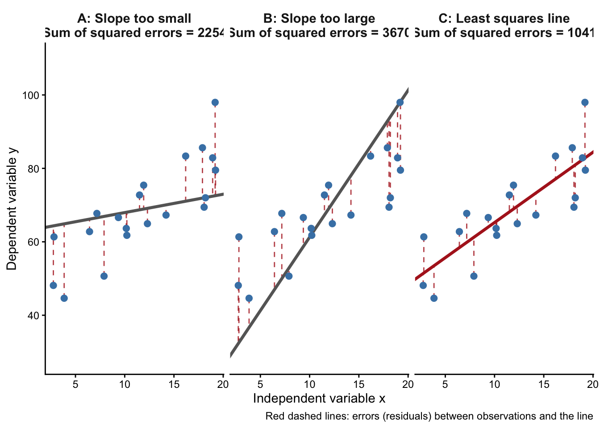

11 単回帰分析
11.1 回帰分析とは
回帰分析とは、ある結果を予測・説明する原因を設定し、結果と原因との関連を検証するための分析方法である。回帰分析において、原因となる変数を独立変数（説明変数）、結果となる変数を従属変数（被説明変数）と呼ぶ。回帰分析においては、独立変数と従属変数の間に線形関係を想定し、独立変数の値から説明変数の値を予測する。
回帰分析には、単回帰分析と重回帰分析がある。単回期分析とは、独立変数が1つである回帰分析のことを指す。一方で、重回帰分析は、独立変数が2つ以上ある回帰分析のことを指す。以降では、単回期分析の考え方について説明する。
11.2 単回帰分析のイメージ
これまでの授業で、量的変数間の関連を検討する際に、散布図を描くことを推奨してきた。まず、改めて散布図を眺めてみたいと思う。以下は、仮想的な散布図である。
この散布図を眺めてみると、なんとなく、右肩上がりの関連、つまりはxとyの間の正の関連が見て取れないだろうか？
そこで、仮に以下のような赤線を引くことができたら、その赤線の傾きの大きさによって、独立変数が1増加（減少）した場合の従属変数の増加量を計算することができる。

このような赤線が引ければ、独立変数のとる値によって、従属変数の値を予測することができる。つまり、独立変数と従属変数の関連は一次関数の形式で表現される。
\[ y_i = b_0 + b_1x_i + e_i \] ここで、\(b_o\)は切片であり、\(x=0\)の場合の\(y\)の値を意味する。\(b_1\)は傾きであり、独立変数が1変化した場合の従属変数の変化料を意味する。この\(b_1\)は，独立変数の係数であるため、回帰係数と呼ばれる。また、右辺の最後には、\(e_i\)という誤差が付けられている。これは、式の\(b_0 + b_1x_i\)だけでは、実際の観測値を完全に予測できず、誤差が存在するためである。
では、このような回帰直線は，どのように引けば良いのか？つまり、散布図上で、どのように回帰直線（赤線）を引けば良いのだろうか？
11.3 最小二乗法
回帰直線を引くには、あるいは回帰係数を求めるためには、回期式中の\(b_0\)と\(b_1\)を求める必要がある。最小二乗法とは、このような切片と傾きを決定する方法である。最小二乗法では、回帰直線と、それぞれの観測値との誤差を最小にするような\(b_0\)と\(b_1\)の値を求める。図にすると以下のようなイメージである。

回期直線上にある予測値は、\(\hat{y_i}=b_0+b_1x_i\)により計算される。そのため、実際の観測値\(y_i\)と、予測値との誤差は、以下で示される。
\[ e_i = y_i-\hat{y_i} = y_i-(b_0+b_1x_i) \]
この誤差を二乗して、全て足し合わせたものは、以下の通り。
\[ \sum_{i=1}^n{e_i^2} = \sum_{i=1}^n{(y_i-\hat{y_i})^2} = \sum_{i=1}^n(y_i-(b_0+b_1x_i))^2 \]
この、\(\sum_{i=1}^n(y_i-(b_0+b_1x_i))^2\)を最小化させる\(b_0\)と\(b_1\)を計算すれば良い。最小二乗法により、切片と傾きを求めると、それぞれ以下のように計算できることが明らかとなる。
\[ b_0 = \hat{y} - b_1\hat{x} \]
\[ b_1 = \frac{s_{xy}}{s_x^2} \] つまり、傾き\(b_1\)は，\(x\)と\(y\)の共分散を、\(x\)の分散で割ったものである。
では、実際に単回期分析を実行してみる。Rでは、lm()によって、単回期分析を実行することができる。以下では、独立変数を教育年数（ZQ23Aから加工して作成）、従属変数を階層帰属意識（ZQ35）として分析してみる。
# まず、ZQ23Aから教育年数に関する連続変数を作成
data4 |> count(ZQ23A) ZQ23A n
1 1 14
2 2 241
3 3 191
4 4 131
5 5 368
6 6 44
7 7 2
8 9 9data4 <- data4 |>
mutate(eduy = case_when(ZQ23A==1 ~ 9, # 中学=9年
ZQ23A==2 ~ 12, # 高校=12年
ZQ23A<=4 ~ 14, # 専門・短大等=14年
ZQ23A==5 ~ 16, # 大学=16年
ZQ23A==6 ~ 18, # 大学院=18年
TRUE ~ NA))
data4 |> count(eduy) eduy n
1 9 14
2 12 241
3 14 322
4 16 368
5 18 44
6 NA 11# 次に、回想帰属意識の処理
data4 |> count(ZQ35) ZQ35 n
1 1 3
2 2 13
3 3 45
4 4 115
5 5 265
6 6 166
7 7 174
8 8 121
9 9 48
10 10 30
11 99 20data4 <- data4 |>
mutate(sss = case_when(ZQ35<=10 ~ 11-ZQ35,
TRUE ~ NA))
# 次に、単回期分析を行ってみる
lm(sss ~ eduy, data = data4)
Call:
lm(formula = sss ~ eduy, data = data4)
Coefficients:
(Intercept) eduy
1.6151 0.2371 lm()では、最初に(従属変数 ~ 独立変数)と設定する。その後、“data=”で使用するデータを指定する。結果と見てみると、“Call:”の箇所で、実行内容が表示されている。さらに、“Coefficients:”の箇所で、分析結果が示されている。
分析結果のうち、“(Intercept)”は切片を、“eduy”は独立変数の回帰係数を示している。この結果からは、教育年数が1年増えると、階層帰属意識は0.24程度上昇することがわかる。
これでは結果が見にくいので、分析結果をより見やすく出力する。
library(modelsummary)
lm(sss ~ eduy, data = data4) |> msummary()| (1) | |
|---|---|
| (Intercept) | 1.615 |
| (0.424) | |
| eduy | 0.237 |
| (0.029) | |
| Num.Obs. | 972 |
| R2 | 0.063 |
| R2 Adj. | 0.062 |
| AIC | 3773.4 |
| BIC | 3788.0 |
| Log.Lik. | -1883.675 |
| F | 65.417 |
| RMSE | 1.68 |
modelsummaryというパッケージの、msummary()関数は、このように結果を見やすくまとめてくれる。先ほどの結果に加え、括弧内には標準誤差が示されている。また、“Num.Obs.”にはサンプル数が表示されている。
さらに、回帰係数の検定結果も表示させるには、以下のようにstars=を指定する。
lm(sss ~ eduy, data = data4) |> msummary(stars = TRUE)| (1) | |
|---|---|
| + p < 0.1, * p < 0.05, ** p < 0.01, *** p < 0.001 | |
| (Intercept) | 1.615*** |
| (0.424) | |
| eduy | 0.237*** |
| (0.029) | |
| Num.Obs. | 972 |
| R2 | 0.063 |
| R2 Adj. | 0.062 |
| AIC | 3773.4 |
| BIC | 3788.0 |
| Log.Lik. | -1883.675 |
| F | 65.417 |
| RMSE | 1.68 |
回帰係数の統計的検定の結果、独立変数である教育年数には”***“と表示されている。つまり、回帰係数0.237は，0.1%の水準で統計的に有意であり、母集団においても独立変数は従属変数に影響を与える可能性が示唆されている。
Noteグループ・ワーク
「u001」データのうち、教育年数（eduy）を独立変数、政治関心（ZQ43）を従属変数とした単回帰分析を実行してみよう。その際、政治関心は、高いほど大きな値を取るような連続変数として作成してください。さらに、単回期分析の結果を解釈してみましょう。
11.4 決定係数
このような回帰分析の結果は、実際のデータに対してどの程度当てはまっているのだろうか。それを知るためには、決定係数（R-squared）を計算するのが良い。
従属変数の観測値\(y_i\)の平均値\(\bar{y}\)からの差（\(y_i-\hat{y}\)）は、観測値と予測値の差（\(y_i-\hat{y_i}\)）と、予測値と平均値の差（\(\hat{y_i}-\bar{y_i}\)）に分解することができる。そのため、これらの平方和をとると、以下のようになる。
\[ \sum_{i=1}^n{(y_i-\hat{y})^2} = \sum_{i=1}^n{(y_i-\hat{y_i})^2} + \sum_{i=1}^n{(\hat{y_i}-\bar{y_i})^2} \]
右辺の第1項は、誤差平方和であり、回帰分析によって説明されなかった部分を意味する。右辺の第2項は、回帰平方和であり、回帰分析によって説明される部分を意味する。回帰係数によって、実際の観測値がどの程度説明されるのかを示したい場合には、全体の\(y\)の散らばりのうち、回帰分析によって説明される部分（回期平方和）がどの程度を占めるかを計算すれば良いので、以下の値を計算すれば良い。これが決定係数である。
\[ R^2 = \frac{\sum_{i=1}^n{(\hat{y_i}-\bar{y_i})^2}}{\sum_{i=1}^n{(y_i-\hat{y})^2}} \]
決定係数は、\(0 \leqq R^2 \leqq 1\)の範囲に収まるという特性を持つ。また、決定係数が1に近づくほど、回帰分析のデータへの当てはまりが良いことを意味する。\(R^2=1\)の場合、回帰直線上に全てのデータがあることになる。
とはいえ、実際の分析では手計算で決定係数を求めることはしない。先ほどの、“msummary()”の結果には、実は決定係数が表示されている。
lm(sss ~ eduy, data = data4) |> msummary(stars = TRUE)| (1) | |
|---|---|
| + p < 0.1, * p < 0.05, ** p < 0.01, *** p < 0.001 | |
| (Intercept) | 1.615*** |
| (0.424) | |
| eduy | 0.237*** |
| (0.029) | |
| Num.Obs. | 972 |
| R2 | 0.063 |
| R2 Adj. | 0.062 |
| AIC | 3773.4 |
| BIC | 3788.0 |
| Log.Lik. | -1883.675 |
| F | 65.417 |
| RMSE | 1.68 |
この結果のうち、“R2”という箇所が、決定係数を意味する。この分析例の場合、全体の散らばりのうち、0.063=6.3%は、回期分析によって説明されることになる。なお、“R2 Adj.”というのは、自由度調整ずみ決定係数を意味する。これついては、重回帰分析の箇所で説明する。
Noteグループ・ワーク
先ほど、「u001」データのうち、教育年数（eduy）を独立変数、政治関心（ZQ43）を従属変数とした単回帰分析を実行してみました。その分析結果から、決定係数を読み取り、その数値の意味を解釈してみましょう。